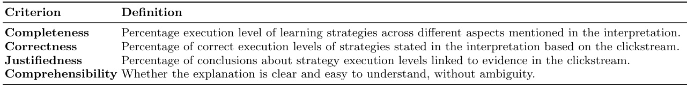
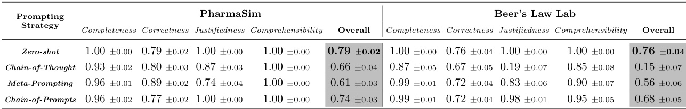
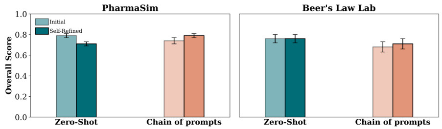

ClickSight: Interpreting Student Clickstreams to Reveal Insights on Learning Strategies via LLMs
None
1 Introduction
このセクションでは、論文の導入部として、研究の背景、目的、そして提案する手法「ClickSight」の概要について解説します。デジタル学習環境におけるクリックストリームデータの可能性と、その分析における課題、そして大規模言語モデル(LLM)を用いた新しいアプローチの必要性を明らかにします。
デジタル学習環境の台頭
近年、デジタル学習環境 💻🎓 が急速に普及し、教育のあり方に大きな変化をもたらしています。これらの環境は、以下のような大きなメリットを提供します：
- 個別化された学習: 一人ひとりの進捗や理解度に合わせた学びを提供。
- スケーラブルな教育: 時間や場所を選ばず、多くの学習者に教育機会を提供。
- データ駆動型の教育: 学習データを活用し、教育内容や方法を改善。
クリックストリームデータとは？
デジタル学習環境では、クリックストリームデータという貴重な情報が収集できます。
学生が学習プラットフォーム上で行うあらゆる操作（クリック、ページの閲覧、課題の提出など）を、タイムスタンプ付きで詳細に記録したデータのことです。まさに「学習の足跡🐾」と言えるでしょう。
学生Aが10:05:45に「練習問題1」ページを開く
クリックストリームデータの価値
このクリックストリームデータを分析することで、学生の学習行動に関する貴重な洞察を得ることができます。これらの洞察は、様々な立場の人々にとって有益です。
学生の学習行動や戦略をより深く理解するのに役立ちます。
学習につまずいている学生へ、タイムリーな介入や個別指導を行うための手がかりを得られます。
自身の学習パターンについてフィードバックを受け、より効果的な学習戦略を身につける助けになります。
しかし、生のクリックストリームデータから意味のある情報を抽出するのは簡単ではありません。主な課題として以下の2点が挙げられます。
1. 高次元性 (High Dimensionality)
データに含まれる特徴（例：クリックの種類、場所、順序、時間間隔など）が非常に多く、複雑です。
2. 詳細な粒度 (Granularity)
データが非常に細かい単位（例：1回ごとのクリック）で記録されているため、そのままでは全体像を把握しにくいです。
これらの特性により、専門家が手作業でデータに意味付け（アノテーション）するには、莫大な時間と労力、そして高度な認知能力が求められます。
これまでのAI教育分野での取り組み
AIを活用した教育分野 (AI for Education) では、クリックストリームデータから学習戦略を検出したり、学生の行動を分析したりするために、これまで様々な技術が用いられてきました。
特定の学習戦略に関連するデータの特徴量を専門家が手動で設計・抽出する方法。[8, 21]
類似した行動パターンを持つ学生のグループ（クラスター）を発見する方法。[21]
学生の操作ログから、頻繁に現れる行動の連続パターン（インタラクショントレース）を見つけ出す方法。[1, 25, 27]
事前に専門家がラベル付けしたデータ（アノテーションデータ）を用いて、機械学習モデルを訓練し、新たなデータを分類する方法。[1]
学生の解答履歴などから、知識状態の時系列的な変化をモデル化する方法。[8]
これらの手法は価値ある洞察をもたらしてきましたが、いくつかの共通の課題も抱えています：
- 多大な手作業: 特徴量設計やアノテーションに多くの人手が必要。
- 専門知識への依存: 教育ドメインの深い知識が不可欠。
- 般化の難しさ: ある学習環境やタスクで有効だった手法が、別の環境やタスクではうまく機能しないことが多い。
つまり、スケーラビリティや汎用性に限界があったのです。

図1: ClickSightの処理パイプライン概要
この図は、本論文で提案するClickSightの全体像を示しています。(1) 環境コンテキストの収集、(2) LLMによるクリックストリームの解釈、(3) ドメイン専門家による解釈の評価、という3つの主要なステップで構成されます。図中には、PharmaSimやBeer's Law Labといった具体的な学習環境の例や、Zero-Shotプロンプティング、自己改善（Self-Refinement）といった要素も示されています。
大規模言語モデル (LLM) の登場と新たな可能性
大規模言語モデル (LLM)、例えばOpenAIのGPT-4o [13]などは、教育工学分野に新たな機会をもたらしています [4]。LLMは既に様々な教育タスクで活用されています。
特に、LLMが持つ強力なパターン認識能力 [11] は、クリックストリームデータを学習戦略の観点から解釈する上で大きな可能性を秘めています。しかし、この可能性はまだ十分に探求されていませんでした。
そこで本論文では、ClickSight という新しい手法を提案します。これは、文脈内学習 (in-context learning) に基づくLLMパイプラインであり、事前に定義された学習戦略を通して学生のクリックストリームを解釈します。
ClickSightの検証における検討事項
ClickSightの性能を検証するために、以下の点を検討します：
- 📝 4つのプロンプティング戦略: LLMに指示を与える方法（プロンプト）の違いが解釈の質にどう影響するか。
- 🔄 自己改善 (Self-Refinement): LLM自身が生成した解釈を批判し、修正するプロセスの影響。
評価方法
ClickSightの評価は、異なるドメインの2つの学習環境で行います：
PharmaSim [16]
薬局アシスタントの診断トレーニング用シミュレーション。
Beer’s Law Lab [21]
中高生向けの仮想化学実験室。
解釈の質を評価するために、人間中心の説明理論に基づいた4つの基準からなるルーブリックを開発し、それに基づいてドメイン専門家が評価を行います。
リサーチクエスチョン (RQ)
本研究では、以下の2つのリサーチクエスチョンに取り組みます：
- (RQ1) どのプロンプティング戦略が、学生のクリックストリームの戦略ベース解釈において最良の結果をもたらすか？ 🤔
- (RQ2) 自己改善は解釈の質にどのように影響するか？ 🧐
実験の結果、ClickSightは質の高い解釈を生成できることが示されました。特に、ある特定のプロンプティング戦略が他の戦略よりも優れた性能を示しました。自己改善については、一部の戦略ではわずかな改善が見られたものの、他の戦略では逆にエラーを誘発する場合もありました。
本研究の貢献は以下の通りです：
- 💡 LLMの新たな活用法: 教育分野のインタラクションデータから理論に基づいた洞察を生成するLLMの可能性を実証。
- 🛠️ ClickSightの実装公開: 提案手法の実装はGitHubリポジトリで公開されています。
https://github.com/epfl-ml4ed/ClickSightLBR25
2 Methodology - ClickSightの仕組み
このセクションでは、学生のクリックストリームデータから学習戦略を明らかにするためのフレームワーク ClickSight の構成要素と手順を詳しく解説します。ClickSightは、大きく分けて3つのステージで構成されています（論文中のFig.1で図解されています）。
論文のFig.1について 論文中で言及されているFig.1は、これら3つのステージを図で示したものです。具体的には、左側にPharmaSimとBeer's Law Labの学習環境のスクリーンショットがあり、中央でデータ収集からLLMによる解釈、右側で専門家による評価という流れが描かれています。
2.1 Gathering Environment Context - 学習環境の情報を集める
このステージでは、LLMが学生の行動を正しく解釈するために必要な背景情報を収集・整理します。具体的には、使用する学習環境、そこで観察される学習戦略、そして学生の行動記録であるクリックストリームのデータ形式を定義します。
本研究では、異なる2つの教育環境からのデータを使用します：
PharmaSim [16]
薬局アシスタントのトレーニング用に開発されたシナリオベースの学習環境です。学生は仮想的な患者との対話を通じて診断スキルを磨きます。
📌 選択されたシナリオ (Fig. 1参照): 授乳に関する問題を抱えた母親が薬局を訪れます。学生は、患者への質問、薬剤師への相談、薬のリサーチ、棚の製品確認、医療文書の参照といったアクションを通じて問題を調査します。
Beer’s Law Lab [21]
ビールの法則を探求する仮想化学実験室です。学生はキュベットの幅、溶液の濃度、レーザー光の色と溶液の色の組み合わせが光の吸光度にどのように影響するかを調べます。
📌 変数の関係性 (Fig. 1参照):
- キュベット幅と溶液濃度: 吸光度と線形関係にあります。
- レーザー光の色と溶液の色: 吸光度と非線形パターンを示します。
既存研究 [17] の表現方法に従い、各クリックストリームをシミュレーション内の特定の行動タイプに対応する関数呼び出しのシーケンスとして構造化しました。
✏️ 例: 学生が時刻 \(t\) に仮想の母親に症状について尋ねるアクションは、次のように表現されます：
discuss(mother, symptoms, t) [output: My breast hurts...]
ここでの各要素の意味は以下の通りです:
discuss: 行動の種類（関数名）mother: 対話の対象symptoms: 対話のトピック（症状）t: 行動が発生した時刻[output: My breast hurts...]: システム（この場合は仮想患者）からの応答
PharmaSimのような環境で学生の行動に見られる9つの診断戦略を、先行研究に基づいて収集しました。これらの戦略は、学習目標との関連性や環境の利用側面において多様です。
診断会話戦略 [5, 6]
効果的 LINDAAFF: 症状の詳細について的を絞った質問をする。
効果的 Inquiry about Relevant External Factors (関連外部要因に関する質問): 赤ちゃんの健康状態など、影響を与える可能性のある外部要因について尋ねる。
非効果的 Premature Closure (早期結論): 十分な情報を集める前に早すぎる診断を下す。
非効果的 Random Inquiry (ランダムな質問): 診断と無関係なトピックについて尋ねる。
非効果的 Insufficient Inquiry (不十分な質問): 診断に必要な情報を十分に収集しない。
リサーチ戦略 (自己調整学習 [29] に着想)
効果的 Targeted Research (的を絞ったリサーチ): 関連する資料（文書、薬剤一覧、棚の商品など）に焦点を当てて調べる。
中程度/非効果的 Unfocused Research (焦点の定まらないリサーチ): 散漫で目的のない閲覧行動。
非効果的 Minimal Research (最小限のリサーチ): 資料をほとんど、あるいは全く利用しない。
ヒント希求戦略 [20]
効果的 Thoughtful Hint Seeking (思慮深いヒント希求): ある程度主体的に取り組んだ後、適切なタイミングでヒントを要求する。
非効果的 Premature Hint Seeking (早すぎるヒント希求): 十分な探索を行わずに、早々にヒントに頼る。
状況による No Hint Seeking (ヒント希求なし): インタラクション中に一切ヒントを要求しない。
学生は主に2種類の行動を取ります：
- Exploration (探索): 変数を操作し、吸光度の変化を観察する。
- Analysis (分析): 後で調査するために値を記録する。
この研究では戦略ベースの解釈に焦点を当てているため、探索行動のみを分析対象とします。探索行動は関数呼び出しとしてフォーマットされます。
✏️ 例: キュベット幅を変数として操作するアクションは以下のように表現されます:
explore(variable=width, value changes=increase from 1.0cm to 1.2cm, begins=5:55, duration=0.2s) [absorbance: increase from 0.67 to 0.79]
ここでの各要素の意味は以下の通りです:
variable=width: 操作した変数（この場合は幅）value changes=increase from 1.0cm to 1.2cm: 値の変化（1.0cmから1.2cmへ増加）begins=5:55: 行動の開始時刻duration=0.2s: 行動の継続時間[absorbance: increase from 0.67 to 0.79]: 吸光度の変化（0.67から0.79へ増加）
データ処理の注意点 先行研究 [21] に従い、同じ変数に対する連続したアクションが3秒以内に発生した場合、それらは1つのアクションとしてマージ（統合）されます。
学生の行動を分析するために、先行研究 [21] から3つの主要な探求戦略を使用しました。
一度に1つの独立変数のみを操作し、他の変数は一定に保つ戦略です。科学的探求の基本的な考え方です。
傾向を特定するために、ある変数の値の全範囲を探索することを奨励する戦略です。例えば、キュベットの幅を最小値から最大値まで変化させてみるなどです。
交絡効果（結果の解釈を難しくする他の要因の影響）を最小限に抑えるために、非焦点変数（現在注目していない変数）の値を適切に選択する戦略です。例えば、キュベット幅の影響を調べる際に、レーザー光の色と溶液の色が一致する（吸光度が最大になる）組み合わせを避けるなどです。
解釈の難しさ これらの戦略は、3つの独立変数間で、また時間経過とともに変化するため、PharmaSimで見られる集約された戦略よりも解釈が難しくなります。
2.2 Interpreting Clickstreams - LLMによるクリックストリームの解釈
ClickSightの核心部分は、大規模言語モデル（LLM）です。LLMは、ステージ1で収集された学習戦略と環境コンテキスト情報を用いて、学生のクリックストリームの解釈を生成します。LLMの解釈生成は、人間中心の説明に関する研究に基づいたルーブリック（評価基準）によって導かれます。
この研究では、以下の4つのプロンプティング戦略を検討し、さらにLLMが自身の応答を見直し改善する自己改善（Self-Refinement）ステップの影響も調査しました。
上の図は、論文中のTable 1を示しています。この表は、LLMが生成する解釈の品質を評価するための基準をまとめたものです。このルーブリックは、LLMへの指示（プロンプト）に含められ、また専門家による評価でも使用されます。基準は以下の4つです：
- Completeness (網羅性): 環境の異なる側面における学習戦略の実行レベルがすべて含まれているか。
- Correctness (正確性): 記述された戦略の実行レベルが実際のクリックストリームデータと一致し、言及されていない戦略については実行されていないことが示されているか。
- Justifiedness (正当性): 結論がクリックストリームからの証拠（例：学生の行動）によって裏付けられているか。
- Comprehensibility (理解可能性): 解釈が明確で、曖昧さがないか。曖昧さがあれば「満たされていない」と判断される。
LLMが意味のある解釈を生成するように導くため、高品質な解釈が何を意味するかの詳細な記述をプロンプトに直接含めました。このルーブリックは、人間中心の説明の品質に関する先行研究 [22, 24] に基づいており、上記の4つの基準（網羅性、正確性、正当性、理解可能性）を概説しています。
🔍 各基準の詳細:
- 網羅性 (Completeness): 環境の様々な側面における学習戦略の実行の全てのレベルが含まれていることを保証します。例えば、PharmaSimでの9つの戦略全てについて言及があるか、などです。
- 正確性 (Correctness): 記述された実行レベルが実際のクリックストリームデータと一致し、言及されていない戦略については実行されていない（unmet）と判断されることを要求します。
- 正当性 (Justifiedness): 結論がクリックストリームからの証拠（例：学生の具体的な行動）によって裏付けられていることを要求します。
- 理解可能性 (Comprehensibility): 解釈が明確であることを保証し、解釈に何らかの曖昧さが含まれる場合は「満たされていない」と見なされます。
このルーブリックは、LLMの応答を形成し、生成された解釈の品質を評価するために使用されました。
プロンプティングが解釈の品質にどのように影響するかを調べるために、効果的なLLMプロンプティングに関する先行研究に基づいて、以下の4つの戦略を設計しました。各プロンプトには、学生のクリックストリーム、環境コンテキスト、学習戦略、そしてルーブリックが含まれています。詳細なプロンプトはGitHubリポジトリで公開されています。
1 Zero-shot [9]
LLMに、特定の推論ガイダンスを与えることなく、ルーブリックを満たす解釈を生成するよう指示します。タスクに関するLLMの内部能力に完全に依存します。
例: 「提供されたルーブリックに基づいて、このクリックストリームを解釈してください。」
2 Chain-of-Thought (CoT) [26]
ステップバイステップの推論を促す部分を追加し、LLMに「段階的に考える」よう促しながら、解釈を徐々に構築させます。
例: 「ステップバイステップで考えながら、このクリックストリームを解釈し、ルーブリックを満たしてください。」
3 Meta-Prompting [28]
単一のプロンプト内で複数ステップの推論指示を導入します。LLMに、戦略の実行レベルを検出し、それを環境コンテキストと学生の行動に結び付け、先行ステップに基づいて最終的な解釈を生成するよう指示します。
例: 「まず戦略の実行レベルを特定し、次に行動とコンテキストを関連付け、最後にそれらを踏まえてルーブリックを満たす解釈を生成してください。」
4 Chain-of-Prompts [23]
3つの連続したプロンプトを使用します：
- 戦略の実行レベルを検出する。
- 環境コンテキストと学生の行動に接続する。
- 最終的な解釈を生成する。
各ステップで専用のプロンプトを使用し、段階的に情報を精緻化します。
ルーブリック基準との整合性を向上させるために、どのプロンプティング戦略の後にも適用できる自己改善ステップを導入しました。
📝 プロセス:
- 網羅性、正確性、正当性の最初の3つの基準は、それぞれ複数の質問（特定の環境側面内の戦略ごとに1つ）で評価されます。
- 理解可能性は、単一の質問で評価されます。
初期バージョンを Initial、最終バージョンを Self-Refined と呼びます。
2.3 Evaluating Interpretations - 生成された解釈の評価
この最終ステージでは、人間の専門家が、前述のルーブリック基準（Table 1参照）を用いて、LLMによって生成された解釈を評価します。各環境について2人の独立した学習科学の専門家が、各出力がルーブリックの各次元をどの程度満たしているかを反映する構造化された採点スキームで評価しました。
2.2で概説したアプローチ（LLMの自己改善プロセス）に従い、専門家による評価を導くために、各ルーブリック基準に対して一連のYes/No形式の質問を使用しました。
- 最初の3つの基準 — 網羅性 (Completeness), 正確性 (Correctness), 正当性 (Justifiedness) — は、それぞれ9つのターゲットを絞った質問で評価されました。これは、戦略と環境の側面（aspect）のペアごとに1つの質問があることを意味します。
- PharmaSim: 1つの側面内に9つの戦略があるため、9つの質問。
- Beer’s Law Lab: 3つの側面それぞれに3つの戦略があるため、 \(3 \times 3 = 9\) の質問。
- 理解可能性 (Comprehensibility) は、単一の二値（Yes/No）質問で評価されました。
クラスタリングによって特定された各行動プロファイルを評価するために、クラスターごとに代表的な学生5人をサンプリングしました。これにより、以下の評価インスタンス数が得られました：
- PharmaSim: 30インスタンス ( \(5 \text{学生} \times 6 \text{クラスター}\) )
- クラスターは、クリックストリームのk-meansクラスタリングから導出され、最適な \(k\) （クラスター数）はエルボー法で決定されました。
- Beer’s Law Lab: 20インスタンス ( \(5 \text{学生} \times 4 \text{クラスター}\) )
- クラスター数は先行研究 [21] の設定に従いました。
結果として、合計で400の解釈 (50学生 \(\times\) 4プロンプティング方法 \(\times\) 2自己改善条件) が注釈付けの対象となりました。
倫理的配慮 全ての参加者はインフォームドコンセントを提供し、研究は大学の倫理委員会によって承認されました (Nr. 010-2023 および 062-2021)。
一貫性を確保するために、まず2人の専門家が各環境から代表的なクリックストリームの解釈を独立して評価しました。具体的には、各行動クラスターから1つのクリックストリームを選択し、4つのプロンプティング戦略すべて（自己改善なし）で解釈させました。これにより、PharmaSimでは24サンプル (6クラスター \(\times\) 4手法)、Beer’s Law Labでは16サンプル (4クラスター \(\times\) 4手法) が得られました。
アノテーター間合意度 (Inter-annotator agreement) は、各二値質問に対してCohen’s \(\kappa\) (カッパ係数) [10] を用いて測定されました。複数の質問で構成される基準については、平均合意度と最小合意度の両方を報告します。
PharmaSimの合意度スコア
- \(\kappa_{\text{avg-complete}} = 1.0\)
- \(\kappa_{\text{avg-correct}} = 0.95\) (\(\kappa_{\text{min}} = 0.74\))
- \(\kappa_{\text{avg-justified}} = 0.97\) (\(\kappa_{\text{min}} = 0.86\))
- \(\kappa_{\text{comprehensible}} = 1.0\)
Beer’s Law Labの合意度スコア
- \(\kappa_{\text{avg-complete}} = 1.0\) (\(\kappa_{\text{min}} = 1.0\))
- \(\kappa_{\text{avg-correct}} = 0.98\) (\(\kappa_{\text{min}} = 0.89\))
- \(\kappa_{\text{avg-justified}} = 0.91\) (\(\kappa_{\text{min}} = 0.70\))
- \(\kappa_{\text{comprehensible}} = 1.0\)
高い合意度が得られたため、残りの解釈は1人の専門家によって注釈付けされました。
カッパ係数は、2人の評価者（この場合は専門家）がカテゴリ分類（この場合はYes/Noの判断）を行う際に、偶然の一致を除いてどの程度意見が一致しているかを示す統計的指標です。値は通常-1から1の範囲を取り、1に近いほど完全な一致、0は偶然による一致と同程度、負の値は偶然よりも不一致が多いことを示します。一般的に0.6以上で十分な一致、0.8以上で強い一致とされます。
基準レベルのスコアを計算するために、複数質問からなる基準については二値応答（Yes=1, No=0）の平均を取りました。単一のYes/No質問で評価される理解可能性 (Comprehensibility) は直接スコアリングされました（明確な解釈は1、曖昧さがあれば0）。
各解釈の総合品質スコア (Overall quality score) (0～1) を計算するために、以下の手順を踏みました：
-
1まず、複数質問からなる3つの基準 — 網羅性、正確性、正当性 — にまたがる9つの質問に対する二値応答を収集しました。
-
2各戦略について、その3つの基準スコア（網羅性、正確性、正当性）を乗じることで、複合スコアを計算しました。これにより、その戦略の実行レベルが正しく言及され、かつ正当化されていることが保証されます。
-
3次に、9つの戦略スコアの平均を取りました。
-
4この中間値に理解可能性 (Comprehensibility) のスコアを乗じました。これにより、総合品質スコアは理解可能性も保証するものとなります。
💡 具体例 (架空): ある戦略Xについて、網羅性=1, 正確性=1, 正当性=0 だった場合、戦略Xの複合スコアは \(1 \times 1 \times 0 = 0\) となります。もし9つの戦略の平均複合スコアが0.8で、理解可能性が1だった場合、総合品質スコアは \(0.8 \times 1 = 0.8\) となります。もし理解可能性が0だった場合は、総合品質スコアも0になります。
3 Results
このセクションでは、私たちが開発した ClickSight というシステムが、学生のクリックストリームデータ（オンライン学習環境での操作ログ）をどれだけうまく解釈できるかを評価した結果を報告します。評価は、PharmaSim（薬局アシスタント訓練用シミュレーション）と Beer’s Law Lab（中学生向け化学実験シミュレーション）という2つの異なる学習環境のデータを用いて行われました。
主な評価ポイントは以下の2つです：
RQ1: プロンプティング戦略の影響
LLM（大規模言語モデル）に指示を出す方法（プロンプティング戦略）の違いが、解釈の質にどう影響するのか？
RQ2: 自己改善の効果
LLM自身に生成した解釈を見直させる（自己改善; Self-Refinement）ことで、解釈の質は向上するのか？
これらの問いに答えることで、LLMが教育分野でのデータ分析にどれだけ貢献できるか、その可能性と限界を探ります。✏️
3.1 Comparative Evaluation of Prompting Strategies (RQ1)
まず、最初の研究課題 (RQ1) である「どのプロンプティング戦略が学生のクリックストリームから学習戦略を最も質の高い形で解釈できるか？」を検証しました。
実験では、以下の4つの異なるプロンプティング戦略を比較しました：
Zero-shot
LLMに特にヒントを与えず、タスクを直接指示するシンプルな方法。「このクリックストリームを解釈して」とお願いするイメージです。
Chain-of-Thought (CoT)
LLMに「ステップバイステップで考えて」と促し、段階的に推論させる方法。思考のプロセスを明示的にさせます。
Meta-Prompting
1つのプロンプト内に複数の段階的な指示（戦略の検出、文脈との関連付け、最終解釈の生成など）を組み込む方法。
Chain-of-Prompts (CoP)
複数のプロンプトを順番に使用し、各プロンプトが特定のサブタスク（例：戦略検出、証拠特定、最終報告）を担当する方法。
これらの戦略で生成された解釈の品質は、私たちが作成した評価ルーブリック（2.3節で詳述）に基づいて評価されました。このルーブリックは、以下の4つの基準で構成されています：
- ✅ Completeness (網羅性): 学習戦略の実行レベルが、環境の様々な側面において全て含まれているか。
- 🎯 Correctness (正確性): 述べられた戦略の実行レベルが、実際のクリックストリームデータと一致しているか。言及されなかった戦略は実行されていないか。
- 🔗 Justifiedness (正当性): 結論がクリックストリームからの証拠（例：学生の具体的な行動）によって裏付けられているか。
- 📖 Comprehensibility (理解容易性): 解釈が明確で、曖昧さがないか。
LLMが生成した解釈の「良さ」を測るための評価基準リストです。この研究では、解釈が学習戦略をどれだけ網羅的に、正確に、根拠をもって、そして分かりやすく説明できているかを、これらの基準で評価しました。
📊 Table 2: 各プロンプティング戦略の性能
下の表は、各プロンプティング戦略が、PharmaSimとBeer’s Law Labの環境で、各評価基準においてどのような平均スコア（と標準偏差）を示したかをまとめたものです。
Table 2: PharmaSimおよびBeer’s Law Labにおける異なるプロンプティング戦略の性能。スコアは平均値（標準偏差）で示されています。
-
🏆 総合スコア (Overall Score):
Zero-shot 戦略が、PharmaSim (0.80 ± 0.10) と Beer’s Law Lab (0.77 ± 0.05) の両方の環境で最高の総合スコアを達成しました。次に高かったのは Chain-of-Prompts 戦略でした (PharmaSim: 0.75 ± 0.05, Beer’s Law Lab: 0.68 ± 0.07)。
-
✅ Completeness (網羅性):
Zero-shot はここでも強く、両環境で完璧なスコア (1.00) を達成しました。これは、学生が取りうる全ての学習戦略を網羅的に特定できたことを意味します。
一方で、Chain-of-Thought はこの基準で最も低いスコアとなりました (PharmaSim: 0.81 ± 0.12, Beer’s Law Lab: 0.78 ± 0.07)。その理由は、Chain-of-Thought の中間的な推論ステップにおいて、いくつかの戦略が省略されてしまい、結果として不完全な解釈になったためです。
✏️ Chain-of-Thought の落とし穴：
「順を追って考えてね」と指示すると、途中でいくつかの戦略を「これは重要じゃないかな？」と判断してしまい、最終的な解釈に含めないことがあるようです。 -
🎯 Correctness (正確性):
PharmaSim環境では、Meta-Prompting が他の戦略よりも優れた正確性を示しました (0.96 ± 0.05)。これは、Meta-Promptingが単一のプロンプト内で全ての戦略を同時に検出しようとするため、戦略間の関連性や学生の行動の意図をより正確に捉えられたからかもしれません。
しかし、この利点はBeer’s Law Lab環境では見られませんでした (0.93 ± 0.04)。環境の複雑さや特性が影響している可能性があります。
-
🔗 Justifiedness (正当性):
Chain-of-Thought (PharmaSim: 0.83 ± 0.09, Beer’s Law Lab: 0.84 ± 0.09) と Meta-Prompting (PharmaSim: 0.86 ± 0.06, Beer’s Law Lab: 0.83 ± 0.12) は、この基準でスコアがやや低めでした。これらの戦略から生成された解釈は、しばしば出力が短く、クリックストリームからの具体的な証拠や根拠が不足している傾向がありました。
「なぜそう言えるの？」が重要！良い解釈とは、ただ結論を述べるだけでなく、「なぜそう判断したのか」を実際のデータ（この場合は学生のクリック操作）に基づいて示すことが求められます。CoTやMeta-Promptingは、この点が少し弱かったようです。
-
📖 Comprehensibility (理解容易性):
PharmaSim環境では、全ての戦略が完璧なスコア (1.00) を達成しました！🎉 これは、どの戦略を使っても非常に分かりやすい解釈が生成されたことを意味します。
しかし、Beer’s Law Lab環境では、Zero-shot のみがこの完璧さを維持しました (1.00 ± 0.00)。他の戦略 (CoT: 0.85 ± 0.37, Meta-Prompting: 0.85 ± 0.37, CoP: 0.95 ± 0.22) では、LLMに「学生の行動を自然言語で記述してください」と指示したにもかかわらず、時折、生の関数形式のクリックストリーム要素（例:
explore(variable=width, value_changes=increase from 1.0cm to 1.2cm)のような技術的な記述）が出力に含まれてしまい、人間にとっての読解性を損ねる場合がありました。🤖 LLMの「クセ」？
「分かりやすく説明してね！」とお願いしても、Beer's Law Labのような少し技術的なデータの場合、つい専門用語や生のデータ形式が混じってしまうことがあるようです。Zero-shotは、なぜかこの点でうまくやってのけました。
これらの結果から、現状ではZero-shotプロンプティングが、特別な工夫なしに最もバランスの取れた高品質な解釈を生成する傾向があると言えそうです。
3.2 Effect of Self-Refinement (RQ2)
次に、2番目の研究課題 (RQ2) である「自己改善 (Self-Refinement) が解釈の品質にどのような影響を与えるか？」を調査しました。
LLMが一度生成した解釈を、設定された評価基準（この研究では前述のルーブリック）に基づいて自分自身で評価し、問題点を見つけて修正するプロセスです。人間が文章を推敲したり、自分の解答を見直したりするのに似ていますね。この研究では、LLMに「完成度は？」「正確性は？」「根拠は十分？」「分かりやすい？」といった質問を投げかけ、もし「いいえ」という回答があれば、その部分を改善するように促しました。このプロセスを3回繰り返しました。
この自己改善プロセスを、RQ1の評価で比較的良好な成績を収めた2つの戦略、Zero-shot と Chain-of-Prompts で生成された解釈に適用しました。
📊 Figure 2: 自己改善前後の総合スコアの変化
下の図 (Figure 2) は、Zero-shot戦略とChain-of-Prompts戦略について、自己改善を行う前 (Initial) と行った後 (Self-Refined) の総合スコアを比較したものです。
Fig. 2: PharmaSimおよびBeer’s Law Labにおいて、Zero-shotおよびChain-of-Promptsプロンプティング戦略を用いて生成された初期解釈 (Initial) と自己改善後解釈 (Self-Refined) の総合スコア。
Chain-of-Prompts (CoP) の場合
自己改善は Chain-of-Prompts 戦略にとって明確なプラスの効果をもたらしました！
- PharmaSim環境: 初期スコア 0.75 → 自己改善後 0.80
- Beer’s Law Lab環境: 初期スコア 0.68 → 自己改善後 0.72
特に、Completeness (網羅性) と Correctness (正確性) の点で改善が見られました。これは、LLMが自身の解釈を見直すことで、見落としていた戦略を捉え直したり、不正確な記述を修正したりできたことを示唆しています。
✨ CoP + 自己改善 = パワーアップ！
Chain-of-Promptsは、自己改善プロセスと相性が良いようです。段階的に解釈を構築するCoPの特性が、自己評価と修正のステップを効果的に機能させたのかもしれません。
Zero-shot の場合
Zero-shot 戦略に対する自己改善の効果は、一様ではありませんでした。
- PharmaSim環境: 初期スコア 0.80 → 自己改善後 0.72
- Beer’s Law Lab環境: 初期スコア 0.77 → 自己改善後 0.77 (変化なし)
PharmaSim環境では、自己改善によってZero-shotの性能がわずかに低下してしまいました。これは、LLMがルーブリックに基づいて自己評価を行う際に「ハルシネーション（幻覚）」を起こしたためです。つまり、実際には問題ない部分を問題があると誤認したり、存在しない情報を元に修正を試みたりした可能性があります。
Beer’s Law Lab環境では、自己改善は効果がありませんでした。これは、LLMが初期の出力（Zero-shotで生成された解釈）が既に全ての評価基準を満たしていると誤って判断してしまったためです。「完璧だ！」と思い込んでしまい、改善の余地なしと結論づけたわけです。
🤔 Zero-shot + 自己改善 = 必ずしも良くならない？
元々性能が高いZero-shotの場合、自己改善が逆に足を引っ張ったり、効果がなかったりすることがあるようです。LLMの自己評価能力にはまだ限界があるのかもしれません。
これらの結果から、自己改善は万能薬ではなく、プロンプティング戦略やタスクの特性によって効果が異なることが分かりました。特に、LLMが自身の出力を正確に評価する能力が、自己改善の成否を左右する重要な鍵となりそうです。今後の研究では、より洗練された自己評価・改善メカニズムの開発が求められるでしょう。📝
4 Conclusion
この論文の締めくくりとして、私たちが提案する ClickSight フレームワークの主な成果と、今後の研究の方向性についてまとめていきましょう！ 📝✨
このセクションでは、本研究で開発したClickSightという手法の有効性、実験で得られた知見、そして将来的な研究の展望について解説します。ClickSightがどのように学生の学習行動理解に貢献できるのか、その核心に迫ります。
この論文では、ClickSightという新しいフレームワークを提案しました。これは、学生のデジタル学習環境でのクリックストリームデータ（どんな操作をしたかの記録ですね！🖱️💻）を、大規模言語モデル（LLM）を使って解釈するためのものです。
ClickSightとは？
学生の複雑なクリック操作の連続（クリックストリーム）を、文脈を理解できるLLM（in-context LLM）が分析し、その行動の背景にある学習戦略を明らかにするフレームワークです。これにより、個々の学生がどのように学んでいるのかを深く理解することを目指します。
人間中心の評価基準
解釈の質を評価するために、人間中心の説明理論に基づいたルーブリック（評価基準表）も開発しました。これにより、LLMの解釈が人間にとってどれだけ分かりやすく、適切かを客観的に測ることができます。
- ClickSight (クリックサイト): この論文で提案された、学生のクリックストリーム（オンライン学習中の操作履歴）を解釈するために、大規模言語モデル（LLM）を活用するフレームワークです。文脈情報（in-context）を重視する点が特徴です。
- クリックストリーム (Clickstreams): 学生がデジタル学習プラットフォーム上で行う一連のクリック操作やナビゲーション、インタラクションの記録データのこと。例えば、「講義ビデオAを再生」→「練習問題Bに挑戦」→「解説ページCを閲覧」といった行動の連続です。
- 文脈内LLMフレームワーク (in-context LLM framework): 大規模言語モデル（LLM）に、特定のタスクを処理させる際に、そのタスクに関連する具体的な文脈情報（例：個々の学生のクリックストリームデータ、事前に定義された学習戦略のリストなど）をプロンプト（指示文）内に直接含めて提供するアプローチです。これにより、LLMはより状況に応じた適切な出力を生成しやすくなります。
- 人間中心の説明理論 (human-centered explanation theory): AIシステムなどが生成する「説明」が、それを受け取る人間にとってどれだけ理解しやすく、有用で、信頼できるか、といった人間の認知特性やニーズを重視する理論です。この研究では、LLMによる解釈の質を評価するためのルーブリック（評価基準）を作成する際の理論的基盤となっています。
- ルーブリック (Rubric): 特定の成果物やパフォーマンスの質を評価するための一連の基準や尺度を明確に示した評価ツールのこと。この論文では、LLMが生成したクリックストリームの解釈が、Completeness（網羅性）、Correctness（正確性）、Justifiedness（正当性）、Comprehensibility（理解容易性）の観点からどれだけ優れているかを評価するために用いられました。
ClickSightの性能を客観的に検証するために、以下の重要な要素について詳細な評価を行いました。
プロンプティング戦略の比較 🤖✍️
LLMにどのように指示を与えるか、つまりプロンプティング戦略によって、生成される解釈の質がどのように変化するかを検証しました。具体的には、4つの異なる戦略（Zero-shot, Chain-of-Thought, Meta-Prompting, Chain-of-Prompts）を比較検討しました。
自己改善 (Self-refinement) の効果 ✨🔄
LLMが一度生成した解釈を、自ら評価し、必要に応じて修正・改善するプロセス（自己改善）が、最終的な解釈の品質向上にどの程度貢献するのかを調査しました。
これらの評価は、薬学シミュレーションであるPharmaSimと、化学実験シミュレーションであるBeer’s Law Labという、2つの異なるドメインの教育環境で実施されました。これにより、ClickSightが特定の分野に限定されず、多様な学習状況で応用可能かどうかを探りました。
- プロンプティング戦略 (Prompting Strategies): LLMにタスクを実行させるために与える指示（プロンプト）の設計方法や工夫のこと。例えば、単純に質問するだけでなく、思考プロセスを促したり、役割を与えたりするなど、様々な戦略があります。この研究では、Zero-shot、Chain-of-Thought、Meta-Prompting、Chain-of-Promptsという4つの戦略が比較されました。
- 自己改善 (Self-refinement): LLMが自身で生成した出力（この場合はクリックストリームの解釈）を、事前に定義された基準（この研究ではルーブリック）に基づいて評価し、問題点があればそれを修正するプロセスのことです。これにより、より質の高い出力を目指します。
- 教育環境 (Educational Environments): この論文では、PharmaSim（薬学シミュレーション）とBeer's Law Lab（化学実験シミュレーション）という2つの異なる学習プラットフォームを指します。これらは学生がインタラクティブに学習を進めることができるデジタル環境です。
実験の結果、いくつかの重要な発見がありました。
ClickSightの有効性
ClickSightを用いることで、LLMは質の高い解釈を生成できることが示されました。特に、Zero-shotプロンプティング（LLMに特別な指示や例を与えずにタスクを実行させる方法）が最も良い成績を収めました。
Zero-shotプロンプティングとは、LLMに対してタスクの具体例（few-shot learningにおける例示）を一切与えずに、タスクの指示だけを与えて応答させる手法です。LLMが持つ汎用的な知識や推論能力に依存する形でタスクを解決しようとします。例えば、「このクリックストリームデータから学習戦略を解釈してください」という指示だけで、過去の類似例などを見せることなくLLMに解釈を生成させるのがZero-shotです。
一方で、自己改善の効果は一様ではありませんでした。改善が見られる場合もありましたが、必ずしも全てのケースで品質が向上するわけではなく、タスクの特性に合わせた改善手法の必要性が示唆されました。これは、LLMが自身の誤りを必ずしも正確に認識・修正できるわけではないことを意味します。
🤔 なぜ自己改善の効果が限定的だったのでしょうか？
- LLMが自身の出力の誤りを正確に特定できなかった可能性がある。
- 改善しようとした結果、新たな誤り（ハルシネーションなど）を生んでしまったケースも考えられる。
- 現在の自己改善の質問やフィードバックの仕組みが、この特定のタスク（クリックストリーム解釈）には最適化されていなかったかもしれない。
本研究はZero-shotプロンプティングに焦点を当てましたが、今後の研究では以下のような方向性が考えられます。
Few-shot設定の探求 📚
LLMにいくつかの解釈の例（few-shot）を提示することで、さらに解釈の質が向上するかどうかを検証します。これにより、LLMがタスクのニュアンスをより深く理解できる可能性があります。
Few-shot設定とは、LLMにタスクを実行させる際に、少数の具体例（数個〜数十個程度）をプロンプトに含めて提示する手法です。これにより、LLMは提示された例からタスクのパターンや期待される出力形式を学習し、より精度の高い応答を生成することが期待されます。Zero-shotが例を全く見せないのに対し、Few-shotは「お手本」を少し見せるイメージです。
ステークホルダーへの適合 👨🏫👩🎓
生成される解釈を、教師や学生といった実際の利用者（ステークホルダー）にとって、より分かりやすく、役立つ形に調整していく必要があります。例えば、教師には指導改善のための示唆を、学生には自己学習を促すフィードバックを提供するなど、目的に応じたアウトプット形式が求められます。
総じて、ClickSightは、LLMがインタラクションデータ（学生の操作履歴など）から理論に基づいた洞察を生成する大きな可能性を秘めていることを示しています。
この研究は、複雑な学習行動の理解を自動化し、より個別化された教育支援を実現するための重要な一歩と言えるでしょう。LLMの力を借りて、これまで見過ごされてきた学生の学びの機微を捉えることが、今後の教育工学における大きなテーマとなるはずです。
このプロジェクトは、スイス連邦教育・研究・イノベーション事務局（SERI）から多大な資金援助を受けて実施されました。